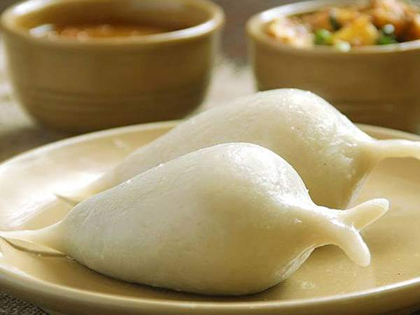
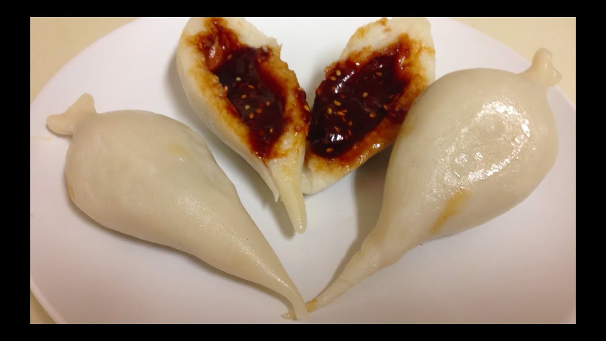

YOMARI


Yomari, also called yamari is a delicacy of the Newar community in Nepal. It is a steamed dumpling that consists of an external covering of rice flour with sweet fillings such as chaku. The delicacy plays a very important role in Newa society, and is a key part of the festival of Yomari Punhi. According to some, the triangular shape of the Yamari is a symbolical representation of one half of the Shadkona, the symbol of Saraswati and wisdom.The Yomari Punhi festival is said to have started in Panchal Nagar (present-day Panauti). Myth has it that Suchandra and Krita, a married couple, first experimented with a fresh yield of rice from their field. And what took shape came to be known as yamari. The new delicacy was eventually distributed among the villagers. As the food was liked by all, the bread was named yamari, which literally means 'tasty bread'.The myth further states that on the same day the couple offered the god of wealth, Kubera, who was passing by in a disguise, the new delicacy. Following this, Kubera disclosed his real identity and blessed the couple with wealth. He also declared that whoever will prepare yamari in the form of gods and goddesses on the full moon of December and observe four days of devotion to god, will get rid of poverty.
Yomari is a Newari food eaten during the festival of Yomari Punhi in Nepal. It signifies the month of Poush in the Nepal Era Calendar which falls in Purnima (a full moon day). It is also known by a name Ya-Mari. 'Ya' means like and 'Mari' means delicacy. It is also prepared during special occasions like birthdays and baby showers. It is also a very popular Nepalese food.
Yomari is a steamed dumpling with a filling of sweet ingredient 'Chhaku' (made from jaggery or molasses or palm sugar). Leftover Yomari can also be a great alternative for the breakfast.
Ingredients
- 2 cups of rice flour
- 1/3 cup of all-purpose flour
- 2 cups jaggery
- 1 tbsp sesame seed
- 2 tbsps ghee (clarified butter)/oil
- 1/2 cup milk
- 1/2 cup warm water
STEPS
1) Preparing Dough
In a bowl, add rice flour and all-purpose flour together and mix it well.
Add warm water gradually kneading well to make the dough soft. Once done, cover it and put it aside to rest for 10 mins.
2) Preparing Jaggery
Heat a saucepan at high temperature and put jaggery and sesame seed in it.
Let the jaggery melt. Keep stirring with a spoon continuously so that it does not burn.
Add little milk and stir again for a minute.
Pinch little melted jaggery between your fingers. If it sticks in your finger then it is ready for use otherwise keep stirring in the saucepan.
Once ready, pour it into a bowl and add fried sesame seeds.
3) Making Yomari
Put some oil in your one hand to keep it moisten. Then take a small ball of dough.
Make them round and turn them into a cone-shaped without any hole.
Then dip your forefinger in warm water with ghee/oil and press down gradually to make a deeper/bigger hole to create a cavity.
Add melted jaggery with sesame seeds to halfway and hold the mouth of the hole and then start closing the upper part of the cone using your forefinger and thumb.
After making the Yomari, steam it in a steamer for 10-15 mins.
It is then ready to serve.Watch Full Recipe Click ToYomari Recipe